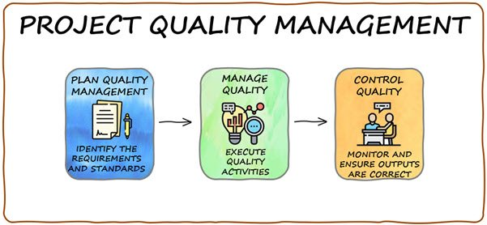

What is the concept of Project Quality Management?
Project Quality Management is the process of continuously prioritizing the quality of your project. In essence, it ist he practice of documenting the quality of you project at any given point in time, or in a cumulative fashion. Documentation can include things like Gantt charts, calendars and other types of documents to help visualize the quality of the product. By using project quality management, you can guide your team through the project while also maintaining a level of quality necessary for the success of your work. There are many techniques involved in this process, and throughout this blog I will go over the most important ones to bring you and your team the most success in your project development.

Why do I need to implement Project Quality Management?
While you may thing your project is going to turn out fine without implementing this technique, you may be lacking in some areas of your project. Using project quality management can save you a lot of time in the long run, in terms of having to go back over and patch certain things out or increasing the quality after the project is 'finished'. There are a few things that are important for this to succeed. The document used to insure this technique's success is called a "Quality Management Plan", and it can be broken down into 3 categories: Quality Planning, Quality Control, and Quality Assurance.
Quality Planning: Quality planning is the first step in your documentation process. This part of the documentation is done at the beginning of development to plan out how you want your project's quality to be in the end and how you are going to maintain that quality throughout development. This can include things such as scheduled meeting times, metrics of measuring quality (i.e. quality of writing, UX, etc.) and should generally have a checklist of things you need to complete throughout the project.
Quality Control: Quality control is the 'second' step in this process (though technically the first since this is when the project actually starts being developed). Quality control is the step in which you will underline requirements for the quality of your project, such as testing (as in testing the product/code testing) and deliverables (a type of documentation given to management) and inspection of said deliverables. This is similar to the next step (Quality Assurance), though it is different in the way that Quality Control focuses on the part of finding the issues in development, while Quality Assurance focuses on actually improving upon those issues and finding solutions to them.
Quality Assurance: Quality Assurance is the next step in the process which comes directly after Quality Control. This step is mostly the act of (after finding the issues in the deliverables) fixing the issues aforementioned. An example of a scenario of Quality Assurance could be that a developer created an image and implemented it into a website, and during Quality Control, it was discovered that the image was far too low of a resolution to be used. Management, during Quality Assurance, then instructed the developer to recreate the image in a higher resolution. Thus the quality of the deliverable was increased and thus the project's overall quality is also increased.
Key Benefits of Project Quality Management
Project Quality Management has one specific goal: Maintain and deliver a quality project to satisfy customer needs and desires. With this in mind, there are more subsets of benefits to implementing this technique, and the primary reason for doing so is making sure that your customers are going to be happy that they paid you and not somebody else. This section will be focused on Customer Satisfaction and Cost Reduction.
Customer Satisfaction: Through implementing Project Quality Management, since the desired outcome is to deliver a product that fits both the customer's needs and the customer's wants, will therefore provide customer satisfaction. Customer satisfaction is the feeling a customer will get when they receive the final product that makes them feel happy with the product. Customer satisfaction needs to be prioritized above almost everything else, and this can be achieved by maintaining a level of quality throughout the project development, making sure that all the project requirements are fulfilled, and that the UX is efficient and easy for newcomers.
Cost Reduction: Through implementing Project Quality Management, you might think that spending extra time just documenting the quality of the project would cost more time, thus costing more money/resources. Though this thought is rational, is it not true that by constantly documenting project quality and maintaining that desired level of quality will reduce the time and work put in after the project is complete to fix issues and improve quality? Through the process of continuous improvement, the time spent throughout the project as a whole will be less, thus reducing cost of the project's completion. This means more money in your pocket, and also a faster project timeline since less time is spent on the project as a whole.
Conclusion
As a whole, using Project Quality Management to insure continuous improvement is incredibly beneficial to both you as a manager and your developers. By insuring the quality of your project, you not only insure that customers will be satisfied with your work, but you also make sure that the work later down the line doesn't cost your team more time and money. Making sure your customers are satisfied is an important quality of any leader, and especially any leader who wants a long career in project management. When customers are happy with your work, they can recommend you to other people who may need work done, and by doing that you are essentially making even more money! If there is anything to take away from this blog, it is that time is money, and by implementing continuous improvement via Project Quality Management, you are always going to make a better product than you would otherwise.